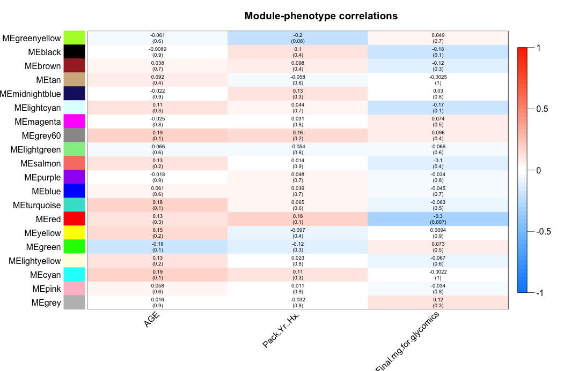

fetchModuGrinnNetwork
This example shows how to compute a network module correlated to a phenotypic feature and expand the network with information from grinn internal database
- INPUT
The table summarizes important arguments
Argument Value Description datNorm data frame containing normalized-omic data Columns correspond to entities e.g. genes and rows to samples e.g. normals, tumors. Require 'nodetype' at the first row to indicate the type of entities in each column. datPheno data frame containing phenotypic data e.g. weight, age Columns correspond to phenotypes and rows to samples e.g. normals, tumors. threshold numerical value from 0-1 The minimum value of similarity threshold, to include edges in the output. targetTo entity type e.g. gene The network module can be expand to a specific entity type, by providing a value to targetTo - EXECUTE FUNCTION
Compute a correlation of metabolite module to phenotypic data and expand to a grinn network metabolite-pathway, using information from REACTOME and KEGG only
#1. load metabolomics data from a csv file datMet = read.csv("Lung_MET.csv", header=TRUE, row.names=1, stringsAsFactors=FALSE) #2. show dimensions of metabolomics data dim(datMet) #3. show the first 10 rows and 10 columns datMet[1:10,1:10] #!!--- NOTE: The following codes convert kegg ids to grinn ids. If the input data is already the grinn ids, these steps can be skipped. grinnID = convertToGrinnID(txtInput=colnames(datMet), nodetype="metabolite", dbXref="kegg") #call grinn function to convert ids grinnID = grinnID[!duplicated(grinnID[,1]),] #keep the first mapped id colnames(datMet) = lapply(colnames(datMet),function(x) ifelse(length(which(grinnID$FROM_kegg == x))>0,as.character(grinnID$GRINNID[which(grinnID$FROM_kegg == x)]),x)) #---------- END id conversion ----------# #4. load phenotypic data from a csv file datClin = read.csv("Lung_phenotype.csv", header=TRUE, row.names=1, stringsAsFactors=FALSE) #5. show dimensions of phenotypic data dim(datClin) #6. show the first 10 rows and all columns datClin[1:10,] #7. execute function result <- fetchModuGrinnNetwork(datNorm=datMet, datPheno=datClin, minModuleSize=5, threshold=0.3, returnAs="tab", targetTo="pathway", filterSource=c("REACTOME","KEGG")) #8. The heatmap of module-phenotype correlations is present. Observe the heatmap and enter module color(s) seperate by space to the R terminal. #Enter module color(s), please separate each color by space: red #See below for details.The following heatmap is generated as a part of the calculation. Observe and choose a module or combination of modules, then enter module color(s) to the R terminal. In this example, the red module is chosen. The red module contains metabolites that negatively (negative is in blue scale, positive is in red scale) correlating to the phenotype, Final.mg.for.glycomics. The similarity threshold is 0.3 and the pvalue is in parenthesis (0.007).

- EXPORT OUTPUT
Export the network as tab-delimited files to visualize in Cytoscape
write.table(as.matrix(result$edges),"moduleNwEdge.txt",sep="\t",row.names = F, quote = FALSE) write.table(as.matrix(result$nodes),"moduleNwNode.txt",sep="\t",row.names = F, quote = FALSE) - VISUALIZATION
The figure is generated by Cytoscape 3.1.1 using grinn style (grinn.xml). It is corresponding to the cytoscape file moduleNw.cys.
Diagram legend

References
Correlation-based analyses apply methods from the following publications:
- Dudoit S, et al. Statistical methods for identifying differentially expressed genes in replicated cDNA microarray experiments, STATISTICA SINICA 2002;12:111.
- Langfelder P, et al. WGCNA: an R package for weighted correlation network analysis. BMC Bioinformatics 2008;9:559.
- Langfelder P, et al. Tutorials for the WGCNA package, click here
Metabolomics data used in this example are taken from the following publication:
- Wikoff WR, et al. Metabolomic markers of altered nucleotide metabolism in early stage adenocarcinoma. Cancer Prev Res (Phila) 2015;8(5):410-8.
Go to HOME | Documentation | fetchGrinnNetwork | fetchCorrGrinnNetwork | fetchDiffCorrGrinnNetwork | fetchModuGrinnNetwork | fetchGrinnCorrNetwork